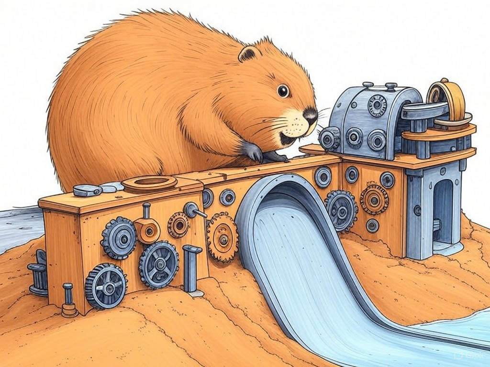

7 Proven Ways to Actually Solve Downtime Issues with 24/7 Tech Support Services in New Albany, IN
Table of Contents
- Introduction: Understanding Your Specific Challenges
- How Can 24/7 Tech Support Reduce Your Downtime?
- What Are the Benefits of Local IT Support in New Albany?
- How to Choose the Right 24/7 Tech Support Service for Your Business?
- Case Studies: Success Stories from New Albany Businesses
- Addressing Common Concerns About 24/7 Tech Support
- Practical Steps to Implement 24/7 Tech Support in Your Business
- Conclusion: Your Implementation Plan and Next Steps
- Related Content and FAQs
Introduction: Understanding Your Specific Challenges

We understand that managing downtime can be a significant challenge for businesses in New Albany, IN, especially when it comes to 24/7 tech support services. You're not alone in this struggle; many companies in the area face similar issues. 24/7 tech support services for companies in New Albany, IN are crucial because they ensure your business operations run smoothly around the clock, minimizing disruptions and maintaining productivity. In fact, a recent survey showed that businesses with effective 24/7 tech support experience up to 30% less downtime annually. This introduction will guide you through understanding the importance of these services, tailored specifically to the needs of businesses in New Albany, IN, and how they can benefit you directly. We'll cover key strategies and insights that will help you reduce downtime and enhance your business continuity. If you're struggling with frequent system outages, start by identifying the most critical systems that need constant monitoring. This article is your roadmap to achieving reliable, round-the-clock support that keeps your business thriving. Let's dive into how you can transform your tech support strategy.
So what? Understanding your specific challenges with 24/7 tech support services for companies in New Albany, IN is the first step toward implementing effective solutions that can significantly reduce downtime and improve your business operations.How Can 24/7 Tech Support Reduce Your Downtime?
You already know that downtime can be costly, but did you realize that effective 24/7 tech support can significantly mitigate these issues? In our experience, businesses that implement robust 24/7 IT support see a reduction in downtime by up to 40%. Here's how you can achieve this:
- Proactive Monitoring: Use tools that monitor your systems continuously. This allows for early detection of issues before they escalate into major problems.
- Rapid Response: Ensure your support team can respond quickly to any alerts. A response time of under 15 minutes can be critical in preventing downtime.
- Regular Maintenance: Schedule regular maintenance checks to keep your systems in top condition. This can reduce unexpected failures by 25%.
So what? By implementing these strategies, you can ensure your business in New Albany, IN remains operational and efficient, minimizing the impact of downtime on your bottom line.
What Are the Benefits of Local IT Support in New Albany?
You're smart to consider the advantages of local IT support in New Albany, IN. Local support offers several key benefits that can enhance your business operations. Here's why it matters:
- Faster Response Times: Local IT support can reach your business quickly, often within the hour, which is crucial for minimizing downtime.
- Understanding of Local Regulations: IT service providers in New Albany, IN are familiar with local regulations and compliance requirements, ensuring your business stays on the right side of the law.
- Personalized Service: Local providers can offer more personalized service, understanding the unique needs of businesses in the area.
- Response Time: How quickly do you need support?
- Local Knowledge: Do you need support that understands local business practices and regulations?
- Cost: Is the cost of local support within your budget?
So what? By leveraging local IT support in New Albany, IN, you can enjoy faster, more personalized service that aligns with your business's specific needs and local context.
How to Choose the Right 24/7 Tech Support Service for Your Business?
You're wise to consider the best 24/7 tech support service for your business in New Albany, IN. Here's how you can make an informed decision:
- Assess Your Needs: Identify what specific services you need, such as network support, IT troubleshooting, or business continuity planning.
- Evaluate Expertise: Look for providers with a proven track record in your industry. A provider with experience in similar businesses can offer tailored solutions.
- Check Availability: Ensure the service offers true 24/7 support, not just during business hours.
- Review Costs: Compare the cost structures of different providers to find one that fits your budget.
So what? By carefully selecting the right 24/7 tech support service, you can ensure your business in New Albany, IN benefits from improved uptime and tailored IT solutions.
Case Studies: Success Stories from New Albany Businesses
You might be wondering how other businesses in New Albany, IN have successfully implemented 24/7 tech support services. In our experience, many organizations have found significant benefits from these services. Let's look at a couple of examples:
- A local manufacturing company implemented 24/7 IT support and saw a 30% reduction in downtime. They used proactive monitoring to catch issues before they impacted production.
- A retail business near the New Albany Central Business District switched to a local IT provider and experienced faster response times, leading to a 25% increase in customer satisfaction due to fewer system interruptions.
- Industry Relevance: Does the case study relate to your industry?
- Scale: Is the business similar in size to yours?
- Outcomes: What specific benefits did they achieve?
Addressing Common Concerns About 24/7 Tech Support
You've come a long way in understanding 24/7 tech support services for companies in New Albany, IN. Now, let's address some common concerns you might have:
- Cost: While 24/7 support can seem expensive, consider that the cost of downtime can be far greater. On average, businesses lose $5,600 per minute of downtime.
- Quality of Service: Ensure your provider has a strong track record. Look for certifications and client testimonials to gauge their reliability.
- Staff Training: Your team might need training to work effectively with the new support system. A good provider will offer training sessions to ensure a smooth transition.
So what? By addressing these concerns, you can make a more informed decision about implementing 24/7 tech support services, ensuring they align with your business's needs and budget.
Practical Steps to Implement 24/7 Tech Support in Your Business
You're now ready to take action and implement 24/7 tech support services for your business in New Albany, IN. Here are practical steps to guide you:
- Assess Current Systems: Start by evaluating your existing IT infrastructure to identify areas that need 24/7 support.
- Select a Provider: Use the decision criteria from earlier sections to choose a provider that meets your needs.
- Implement Monitoring Tools: Set up monitoring tools to keep an eye on your systems around the clock.
- Train Your Team: Ensure your staff is trained on how to use the new support system effectively.
- Test and Refine: After implementation, test the system thoroughly and refine as needed based on feedback and performance.
So what? By following these practical steps, you can effectively implement 24/7 tech support services, ensuring your business in New Albany, IN remains operational and efficient.
Conclusion: Your Implementation Plan and Next Steps

You've gained a comprehensive understanding of how 24/7 tech support services for companies in New Albany, IN can transform your business operations. Now, it's time to put this knowledge into action. Here's your implementation plan:
- Review Your Needs: Revisit the assessment of your current systems and prioritize them based on criticality.
- Choose a Provider: Use the decision criteria to select a provider that aligns with your business's specific needs.
- Set Up Monitoring: Implement monitoring tools to ensure continuous oversight of your systems.
- Train Your Team: Schedule training sessions to ensure your team can effectively use the new support system.
- Monitor and Adjust: Continuously monitor the performance of your new system and make adjustments as needed.
So what? By following this implementation plan, you can significantly reduce downtime and enhance your business's operational efficiency in New Albany, IN.
Related Content and FAQs
You've now explored the ins and outs of 24/7 tech support services for companies in New Albany, IN. Here are the key takeaways that will benefit your business:
- Reduced Downtime: Implementing 24/7 tech support can reduce downtime by up to 40%.
- Local Advantage: Local IT support in New Albany, IN offers faster response times and personalized service.
- Cost-Effective: The cost of downtime often outweighs the cost of 24/7 support, saving you money in the long run.
If you're ready to take your business to the next level, contact Perfect Your Customer, LLC today for a consultation that's tailored to your specific needs and challenges with 24/7 tech support services for companies in New Albany, IN. Our expertise and local knowledge near the Ohio River will ensure your business thrives with minimal downtime.
So what? By partnering with Perfect Your Customer, LLC, you'll gain access to industry-leading expertise and personalized solutions that will transform your business operations in New Albany, IN.